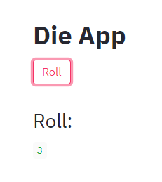

Using Streamlit to build a dashboard
In this tutorial we will see how to create a service with a graphical interface using a very convenient python package called streamlit.
With streamlit it is very quick to make graphical applications and this can be used together with Daeploy to make dashboards for monitoring or configuration of your algorithms, just to name a few examples. We will not go into detail into how to use streamlit itself, but rather how to deploy a streamlit application in Daeploy and have it communicate with your services.
Creating the Streamlit Service
Let’s reuse the Die Roller service we created as part of the Yatzee game in Cross-service Communication and create a roll button and a display for the die roll. We start by creating a new project:
>>> daeploy init
project_name [my_project]: die_app
The first thing we have to do is to add streamlit to the requirements.txt
file:
daeploy
streamlit
We rename service.py to die_app.py and write our streamlit app in that file:
import streamlit as st
from daeploy.communication import call_service
st.title("Die App")
roll = st.button("Roll")
if roll:
data = call_service(service_name="die_roller", entrypoint_name="roll_die")
st.header("Roll:")
st.write(data)
Notice how it does not end with service.run() like regular Daeploy services and
therefore nothing would happen if we were to deploy the service now. To run
streamlit apps we need to use the shell command streamlit run app.py,
so for die_app.py to run when we deploy the service, we have to create a new
file called app.sh that runs the shell command:
streamlit run die_app.py
When a Daeploy service is deployed it will look at the environment variable APP_SCRIPT
to decide which file should be run on start-up. It is service.py by default but it
can be changed by modifying the value of APP_SCRIPT in .s2i/environment:
APP_SCRIPT = app.sh
Now that Daeploy knows that app.sh is the main file of the service we must ensure that it is executable, which we can do by adding yet another file, .s2i/bin/assemble:
#!/bin/bash
# Running stock assemble script
${STI_SCRIPTS_PATH}/assemble
# Making app.sh executable
chmod +x ${APP_ROOT}/src/app.sh
Note
This might seem like a lot of steps just to run a small app, but these same steps can be used to run any bash script on start up.
Deploying the Service
Since die_app is dependent of die_roller_service it has to be up and running before die_app can be used. The code for die_roller_service is:
import logging
from daeploy import service
from random import randint
logger = logging.getLogger(__name__)
@service.entrypoint
def roll_die() -> int:
return randint(1, 6)
if __name__ == "__main__":
service.run()
>>> daeploy deploy die_roller 1.0.0 ./die_roller_service
Active host: http://your-host
Deploying service...
Service deployed successfully
MAIN NAME VERSION STATUS RUNNING
------ ----------- --------- -------- -----------------------------------
* die_roller 1.0.0 running Running (since 2020-12-15 12:10:25)
We can now deploy the streamlit app, like we would any other, with one important difference. Streamlit uses internal port 8501 to communicate so we have to explicitly set the port when deploying:
>>> daeploy deploy die_app 1.0.0 ./die_app --port 8501
Active host: http://your-host
Deploying service...
Service deployed successfully
MAIN NAME VERSION STATUS RUNNING
------ ------- --------- -------- -----------------------------------
* die_app 1.0.0 running Running (since 2020-12-15 12:15:35)
Note
Daeploy services created using the SDK use port 8000, which is the default
port for daeploy deploy. But when deploying other apps it might be necessary
to change it to not get a Bad Gateway.
Open http://your-host/services/die_app/ and you should see your app there:
{kind=link}